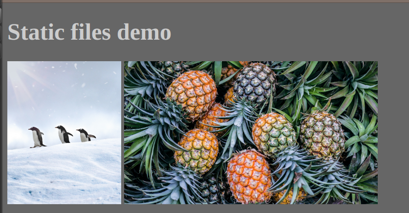

Django and static resources (images, JavaScript, CSS, etc.)
Created for
Iva E. Popova, 2018-2019:

Access Static Resources in Django Templates
Access Static Resources in Django Templates
Overview
- Dynamic files are the files dynamically generated by Django, usually using a Template System
- Static files are images, CSS, JavaScript, etc. files which also have to be served by our app
- We want our project to be flexible for future changes, that's why we do not want to hardcode the paths to those static resources.
Overview
- Django has a builtin module (django.contrib.staticfiles), that collects static files from each of your applications (and any other places you specify) into a single location that can easily be served in production.
How to organize the static files in project?
How to organize the static files in project?
Overview
- Django’s STATICFILES_FINDERS setting contains a list of finders that know how to discover static files from various sources. One of the defaults is AppDirectoriesFinder which looks for a “static” subdirectory in each of the INSTALLED_APPS,
Configuring static files
- Make sure that
django.contrib.staticfilesis included in your INSTALLED_APPS section in 'settings.py' - In settings.py, define the STATIC_URL, giving it the path to your static files
INSTALLED_APPS = [
'todo_app',
#...
'django.contrib.staticfiles',
]
#...
STATIC_URL = '/static/'
Configuring static files
- Store your static files in a folder called
{app_name}/static/{app_name}/
app_name/
├── ...
|
├── static
│ └── app_name
│ └── example.jpg
├── templates
│ └── app_name
│ └── base.html
|...
Using static files
- In your templates, use the static template tag to build the URL for the given relative path using the configured STATICFILES_STORAGE.
- The {% static %} template tag generates the absolute URL of static files.
{% load static %}

Adding per-project static files
- For static files, which will be common to your apps, is better to have them in one place
- We can easily define another folder (i.e.
{project_folder}/common/static/) for Django to look for static files in thesettings.py, STATICFILES_DIRS section
STATICFILES_DIRS = [
os.path.join(BASE_DIR, "common", "static")
]
Demo
- Create (if you don't have it) the
demosapp in our todo_project - Set the route:
path('static', views.static, name="static") - Create the view, as given bellow:
def static(request):
context = {
'title': "Static files demo"
}
template_file = 'demos/static.html'
return render(request, template_file, context)
Demo - folder structure
- Download some images from unsplash.com
- Organise your files as given bellow:
todo_project/
├── db.sqlite3
├── demos
│ ├── ...
│ ├── static
│ │ └── demos
│ │ ├── images
│ │ │ ├── james-eades-1391061-unsplash.jpg
│ │ │ └── phoenix-han-1386167-unsplash.jpg
│ │ └── main.css
│ ├── templates
│ │ └── demos
│ │ ├── base.html
│ │ ├── static.html
the base Template
{% load static %}
<!DOCTYPE html>
<html>
<head>
<title></title>
<link rel="stylesheet" type="text/css" href="{% static 'demos/main.css'%}">
</head>
<body>
<h1>{{title}}</h1>
{% block content %}
{% endblock %}
</body>
</html>
the static.html template
{% extends 'demos/base.html' %}
{% load static %}
{% block content %}
{% endblock %}
the main.css
body{
background: #666;
color: #CCC;
}
img{
height: 30vh;
}
result
- Point your browser to http://127.0.0.1:8000/demos/static and you must something similar to: 
{kind=link}
Exercises
todo_app styling
The Task
- Add some styling for todo app
- You can use the How TO - Create a To Do List @w3schools for the HTML/CSS part of the task
These slides are based on
customised version of
framework